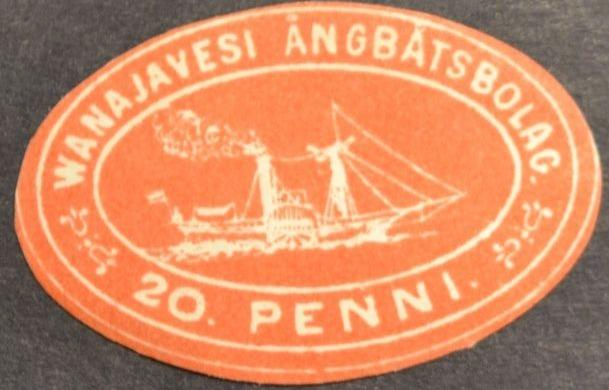
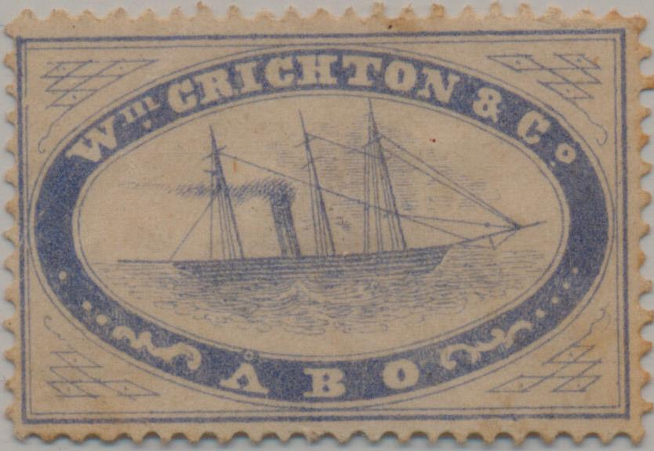
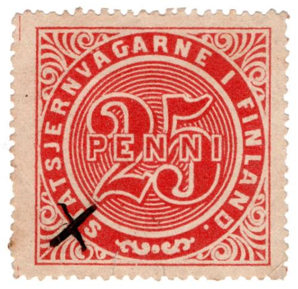
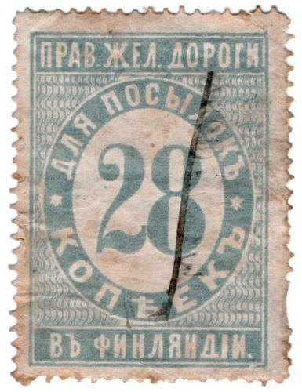
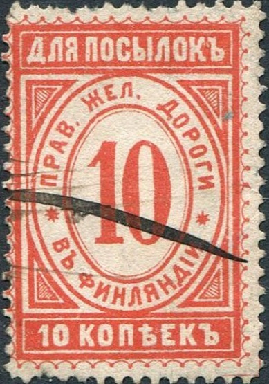
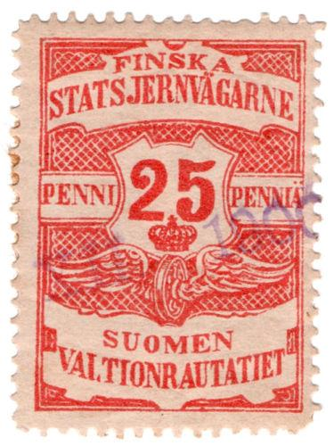

Return To Catalogue - Finland 1856 issue - Finland Miscellaneous
Note: on my website many of the
pictures can not be seen! They are of course present in the
catalogue;
contact me if you want to purchase the catalogue.


Reprints?
This oval stamp is a steamship company stamp issued in 1867. Three values were issued, 10 p red, 20 p red and 25 p red. A picture of a similar stamp is shown in 'The world of Classic Stamps' by James A. Mackay, page87 (value 25 penni red, the illustration is in black). I've never seen any cancelled copies. Reprints exist, which were made in 1875. If I'm well informed, a reprint exists which has the bowsprit extending too much (way beyond the ends of the ropes). In the original stamp the accent above the second 'A' of 'ANGBATSBOLAG' is not touching the frameline above it. At least one forgery also exists. More information can be found in "Cinderella Stamps by L.N. and M. Williams (William Heinemann 1970)". I have not read this book myself.
10 p blue and yellow 25 p blue and yellow 50 p blue and yellow Other design (?) 10 p blue and yellow 25 p blue and yellow 50 p blue and green
These stamps are listed in the Handbuch fur Postmarkensammler by Ferdinand Meyer. Are the last mentioned stamps actually the stamps shown below?:


The 10 p in circle design stamps were 'reprinted' in 1982 in a minisheet of 4 stamps with inscritpion '2. POSTIMERKKIMESSUT SUOMESS 23-24.10.1982' at the top and 'SUOMEN KERAILYMESSUT ry MUISTORAKKI no.2' at the bottom.

"HELMI" 25 p blue 30 p violet 40 p orange 60 p green "RUMSALA" 20 p blue 25 p brown 30 p brown 50 p green 1 M violet
Apparently, these were not stamps, but passenger tickets for the boat Helmi connecting the cities of Abo and Runsala.

A similar label with "ABO ANGSLUPS BOLAG"; 25 p brown.

Some ship labels from Wm Crighton & Co in Abo issued in 1889?
"THYRA" steamer stamps from 1884



Perforated or imperforate


Railway stamps of Finland with Russian inscription.


1883 and 1889 issue (thinner letters)

1876 issue Exists also with Russian inscription and value in
kopecks

1877 issue. 25 p and 7 k (Russian text)


1884 issue, thinner lettering


1884 with Russian inscription and value in kopecks

"FOR PAKET STATSJERNVAGERNE FINLAND"
I have seen With 'normal' inscription: 30 p red, 40 p brown With Russian inscription: 10 k red.

I've also seen the values 25 p red and 50 p orange in this
design.




25 p red, 50 p orange, 1 K violet and 10 k red.
As 1900 issue, but now with value in white on coloured background

Private railways: 1897 inscription "RAUMAN RAUTATIE",
25 p blue.
50 p green, "JOKKIS JERNVAG" from 1899(?).

Brahestadt-Jernvag from 1900. I've also seen 50 p red, 60 p blue,
1 Mk brown and 3 Mk blue.

1915 isue, war tax revenue. I've also seen 10 Mk blue.

{kind=link}
{kind=link}
{kind=link}
{kind=link}
{kind=link}
{kind=link}
{kind=link}
{kind=link}